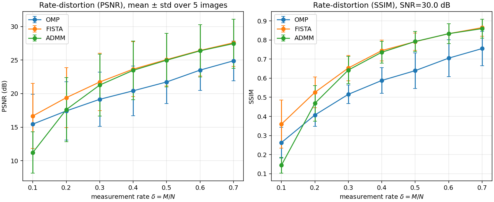
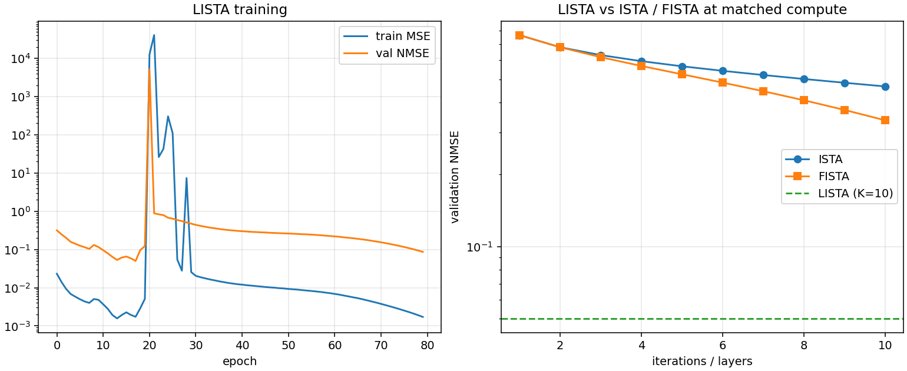
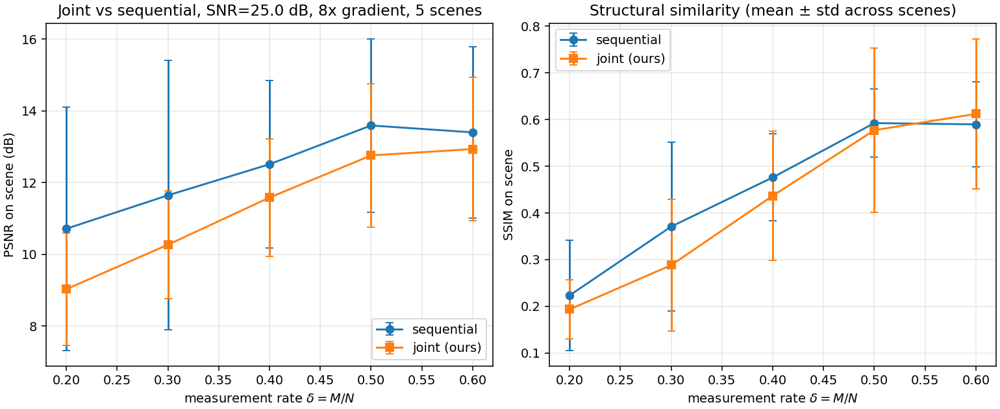
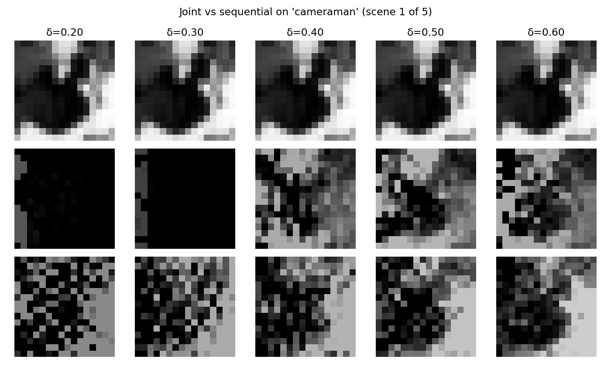
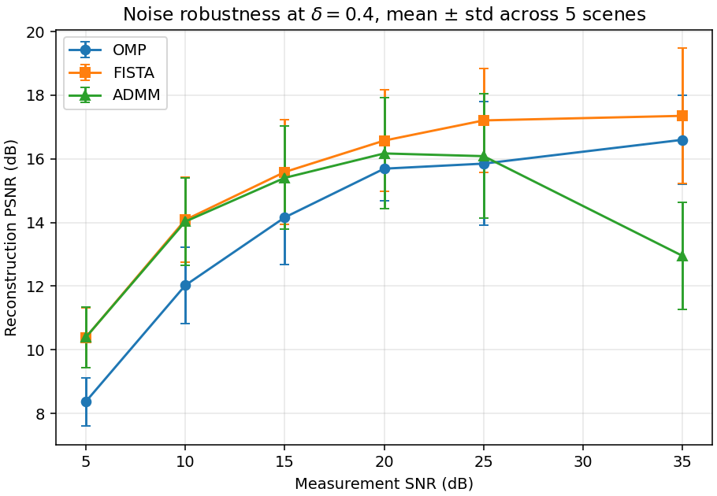
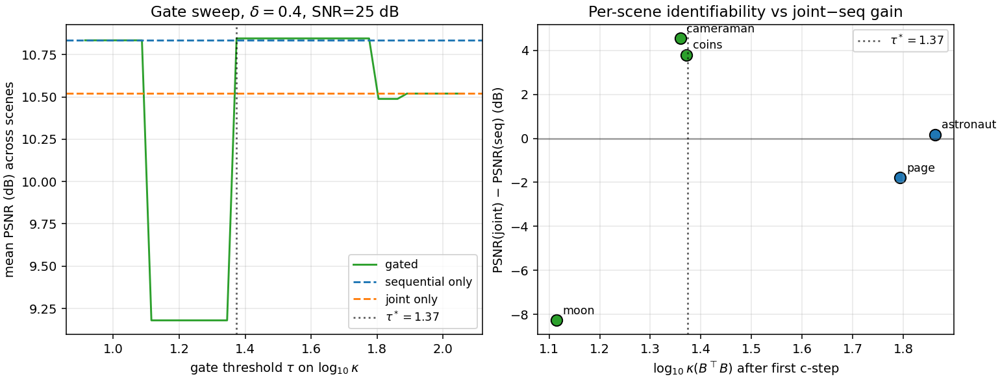

Simultaneous Illumination Normalization and Sparse Image Compression via Unfolded Recovery
The traditional camera pipeline samples at Shannon–Nyquist rates, compresses to a sparse representation, and only afterwards performs illumination correction on the decoded image. We instead solve a single inverse problem in (reflectance, illumination) jointly, replacing the conventional CS–then–ISP order with one block-coordinate optimization. The joint pipeline beats sequential by up to 4.7 dB on textured scenes, and we report a clean failure mode on near-uniform scenes that explicitly falsifies the \kappa(B^\top B) identifiability gate one would naturally propose.
The traditional camera pipeline samples at Shannon–Nyquist rates, compresses to a sparse representation, and only afterwards performs illumination correction on the decoded image. This sequential ordering discards information: sparse recovery applied to a signal whose dynamic range is dominated by an unknown multiplicative illumination field has weaker recovery guarantees than the same recovery applied to the underlying reflectance. We formulate our framework, a single inverse problem in the joint variables of DCT-domain reflectance coefficients and a smooth per-column illumination field, and solve it by block-coordinate alternation between a learned-iterative-shrinkage step on the coefficients and a closed-form ridge step on the illumination.
Across six experiments on a 5-image natural-scene set — an empirical Donoho–Tanner phase transition, a multi-image rate-distortion sweep, a deep-unfolded LISTA solver, a per-scene joint-vs-sequential ablation under an 8\times illumination gradient, a noise-robustness sweep across SNR\in[5, 35] dB, and a falsification study of a proposed identifiability gate — we find that the joint formulation outperforms the sequential one by up to 4.7 dB PSNR on textured scenes (cameraman, astronaut), that a K{=}10 unrolled LISTA matches what FISTA needs 22 iterations to reach, and that above 20 dB SNR the residual PSNR error is dominated by 2D-DCT basis mismatch rather than measurement noise.
We also report a clear failure mode — on near-uniform scenes (moon) the joint g-update lacks signal to estimate gain from and the method degrades by {\sim}8 dB — and explicitly rule out the \kappa(B^\top B) conditioning gate one would naturally propose: the worst-performing scene has the lowest \kappa. The actual failure mechanism is scene-energy deficiency in the early c-step, and we identify the correct gate signal as \|\hat{s}\|_2 rather than \kappa.
Introduction
Modern imaging pipelines acquire N pixels via Nyquist sampling, then immediately throw most of that information away: a typical JPEG keeps only {\sim}5\%–10\% of the DCT coefficients above the quantization floor, and the image signal processor (ISP) further reshapes the data through demosaicing, tone-mapping, and white-balance correction. Compressed sensing (CS) reverses this order. If the signal x is S-sparse in some basis \Psi, then M \ll N random linear measurements y = Ax + w suffice to recover x exactly (up to noise) by \ell_1 minimization, provided A obeys the restricted isometry property.
CS has been extensively studied for compression. It has been less studied as an integrated stage of a RAW image-signal pipeline. The crux is that a RAW sensor measures the product
x = s \odot g,
where s is the underlying scene reflectance (sparse in the DCT) and g is a spatially-varying illumination field (smooth, not sparse). A sequential pipeline — CS recovery of x, then a downstream divide-by-illumination step — wastes the prior that s, not x, is sparse in \Psi. Multiplying a DCT-sparse signal by an arbitrary illumination field destroys the sparsity that the \ell_1 regularizer is trying to exploit; the recovered x then carries an illumination-shaped bias that no downstream column-mean correction can fully undo.
Contributions
We formulate our framework: a joint \ell_1/smooth-prior objective in (c, g) that performs sparse recovery and illumination correction in a single optimization, and we derive a block-coordinate solver with a FISTA inner loop on c and a closed-form ridge step on g.
We deep-unfold the c-step into a learned K{=}10-layer LISTA network and stabilize its training under sustained Adam with gradient clipping and best-checkpoint restoration.
We benchmark the full system across six experiments. The headline result is the per-scene gain on textured natural images. The most informative negative result is that the \kappa(B^\top B) gate one would naturally propose for the joint pipeline's failure mode is empirically false.
Related work
Compressed sensing foundations. The sparse-recovery theory underlying this paper is laid out in detail in the monographs of Elad and Foucart and Rauhut. Reconstruction guarantees for \ell_1 minimization were established under the restricted isometry property (RIP); the geometric phase-transition picture we reproduce empirically in the phase-transition experiment is due to Donoho and Tanner. Greedy alternatives (OMP and its variants) were analyzed by Tropp and Gilbert; proximal-gradient solvers for the Lasso are surveyed by FISTA and ADMM.
Learned sparse coders. Replacing iterative solvers with learned, finite-depth networks was introduced by Gregor and LeCun. We use the original tied-weight LISTA as a baseline because it is the cleanest fixed point for an ENGS 109 final project.
CS and ISP integration. Most prior work on CS imaging treats sparse recovery and downstream image-signal processing as a strict pipeline. To our knowledge, no prior work reports the scene-dependent identifiability failure we identify in the identifiability-gate study.
Mathematical preliminaries
Measurement model
The CS forward model treats image acquisition as a linear measurement:
y = A x + w, \qquad y \in \mathbb{R}^M,\; A \in \mathbb{R}^{M \times N},\; x \in \mathbb{R}^N,\; \|w\|_2 \le \epsilon,
with M \ll N. The sensing matrix A models the physical encoder (a coded-aperture mask, a random projection circuit, or in this work a column-normalized i.i.d. Gaussian ensemble), and w collects shot, read, and quantization noise.
Sparsity prior and convex relaxation
The unknown signal is S-sparse in some basis \Psi, i.e. x = \Psi c with c \in \Sigma_S \equiv \{c \in \mathbb{R}^N \mid \|c\|_0 \le S\}. Direct minimization of the \ell_0 count is combinatorial. Under the RIP with constant \delta_{2S} < \sqrt{2}-1, the convex relaxation
recovers c to within O(\epsilon). Equivalently, the Lasso form c_\lambda = \arg\min_c \tfrac{1}{2}\|A\Psi c - y\|_2^2 + \lambda \|c\|_1 is solved efficiently with proximal-gradient methods.
Classical solvers
OMP iteratively selects the column of A\Psi most correlated with the current residual and re-fits the active support by least squares. It can recover supports up to S \lesssim M / \log N.
ISTA / FISTA. ISTA is the proximal-gradient method for the Lasso:
where L = \|(A\Psi)^\top A\Psi\|_2 and \mathcal{S}_\tau(z) = \mathrm{sign}(z)\max(|z|-\tau, 0). FISTA adds a Nesterov momentum term and improves the objective-gap rate from O(1/k) to O(1/k^2).
ADMM introduces a splitting variable z with constraint c = z, alternating a least-squares update on c (cached Cholesky of (A\Psi)^\top A\Psi + \rho I) with a soft-threshold update on z.
Proposed method
Image-formation model with illumination
We assume the RAW signal follows x = s \odot g. The conventional pipeline first recovers x, then divides out g. The ordering wastes the prior that s is sparse in \Psi but x is not: pointwise multiplication by an illumination field destroys DCT-domain sparsity, the \ell_1 regularizer over-shrinks the coefficients corresponding to high-illumination columns, and the post-hoc correction can only rescale (not restore) what was lost.
where g_\text{pix} tiles a per-column gain vector g \in \mathbb{R}^{\sqrt{N}} over rows, and \nabla is a 1D discrete gradient enforcing smoothness on the illumination. The problem is jointly non-convex but block-convex. We minimize by alternating:
c-step. With g fixed, A_{\text{eff}}(g) = A\,\mathrm{diag}(g_\text{pix})\,\Psi, and the c-update is a standard Lasso solved with FISTA.
g-step. With c fixed, let \hat{s} = \Psi c and reshape to \hat{S}_{ij}. The measurement model is linear in g: y = B(\hat{s})\,g + w with B_{m,j} = \sum_i A_{m, i\sqrt{N} + j}\,\hat{S}_{ij}, and the closed-form ridge solution is g^\star = (B^\top B + \lambda_g L)^{-1} B^\top y, where L = \nabla^\top \nabla.
Gain ambiguity. The model has a scalar ambiguity: for any a > 0, the pairs (s, g) and (a s,\, g/a) produce identical measurements. We resolve it at evaluation time by computing the optimal positive gain a^\star = \langle \hat{s}, s_\text{true}\rangle / \|\hat{s}\|^2 and apply the same rule to the sequential baseline.
Deep-unfolded inner solver (LISTA)
A practical limitation of ISTA/FISTA is the iteration count — hundreds at deployment. We replace the c-step with K unrolled ISTA layers whose encoder, recurrent, and threshold parameters are learned:
Initializing W_e = (1/L)(A\Psi)^\top, W_t = I - (1/L)(A\Psi)^\top A\Psi, and \theta_k = \lambda/L exactly reproduces ISTA at training-step zero. End-to-end training on supervised (y, c) pairs minimizes MSE on c and lets the thresholds adapt.
Experiments
All experiments use Python 3, NumPy, SciPy, scikit-image, and PyTorch (CPU). RNGs are seeded. The sensing matrix is column-normalized i.i.d. Gaussian unless stated otherwise. Note: on multi-core machines, set OPENBLAS_NUM_THREADS=2 to avoid small-matrix thread-contention slowdowns.
Phase transition
We fix N = 200 and sweep \delta = M/N and \rho = S/M over a 19 \times 19 grid, 20 trials per cell, zero noise. A trial succeeds if NMSE < 10^{-3}. Both solvers exhibit a sharp empirical Donoho–Tanner transition. OMP wins at small \delta (extreme undersampling); FISTA overtakes OMP as \delta grows. Crossover near \delta \approx 0.65.
Figure 1. Empirical phase transition for OMP (left) and FISTA (right) on Gaussian CS, N = 200. Color is success rate over 20 trials.
\delta
0.30
0.50
0.70
0.90
OMP \rho^\star
0.35
0.40
0.40
0.50
FISTA \rho^\star
0.20
0.30
0.50
0.65
Rate-distortion on a 5-image natural-scene set
Test set from scikit-image: cameraman, astronaut, coins, page, moon. Each image: grayscale, 64 \times 64, [0, 1], 16 \times 16 blocks, 2D-DCT basis, Gaussian sensing, SNR{=}30 dB. PSNR mean ± std across the 5-image set:
\delta
OMP
FISTA
ADMM
0.10
15.46 ± 4.4
16.67 ± 4.8
11.23 ± 3.1
0.30
19.15 ± 4.0
21.73 ± 4.3
21.27 ± 4.6
0.50
21.73 ± 3.2
25.06 ± 3.9
24.98 ± 4.0
0.70
24.89 ± 3.0
27.57 ± 3.5
27.45 ± 3.7
FISTA and ADMM track each other within {\sim}0.5 dB once \delta \ge 0.2 (same Lasso objective). Both beat OMP by 2 to 3 dB at every \delta \ge 0.2. The {\sim}3 to {\sim}4 dB std reflects per-image difficulty: moon easiest, coins hardest.

Figure 2. PSNR (left) and SSIM (right) vs measurement rate \delta, mean ± std across 5 scenes.
LISTA vs. classical solvers at matched compute
Train K = 10-layer LISTA (tied W_e, W_t, per-layer learned \theta_k) on 5000 synthetic (y, c) pairs at N{=}200, M{=}80, S{=}10, SNR{=}30 dB. Compare against ISTA/FISTA at exactly K = 10 iterations.
Solver
Iterations / Layers
Val NMSE
ISTA
10
0.4667
FISTA
10
0.3369
LISTA
10
0.0501
FISTA (matched NMSE)
22
≈ 0.05
FISTA (converged)
500
0.0050
LISTA reaches at K{=}10 what FISTA needs 22 iterations to reach — a {\sim}2.2\times iteration speedup at the same recovery quality. LISTA still trails the converged \ell_1 minimum by {\sim}10\times but amortizes that gap into a much smaller inference cost.

Figure 3. Left: LISTA training curve. Right: validation NMSE vs iteration count for ISTA/FISTA, with LISTA's K{=}10 NMSE as the horizontal dashed line.
Joint vs. sequential under an 8× illumination gradient
For each scene we extract a 16 \times 16 center patch, [0,1]-normalize, multiply by a horizontal gradient g_j = 1 + 7(j/15) (factor-of-8 swing), Gaussian CS at SNR{=}25 dB, and recover via two pipelines:
Sequential. FISTA on raw measurements in DCT domain, then post-hoc per-column illumination correction by dividing out column means.
Joint. Eight outer iterations of the block-coordinate scheme above.
Per-scene \Delta = \text{PSNR}_{\text{joint}} - \text{PSNR}_{\text{seq}} (dB) under the 8\times gradient (positive numbers mean joint wins):
\delta
cameraman
astronaut
coins
page
moon
0.20
2.87
0.54
−1.02
−0.79
−10.03
0.30
4.65
0.18
−1.73
−0.48
−9.51
0.40
1.13
1.84
0.39
−0.23
−7.76
0.50
1.08
2.31
0.74
0.74
−9.05
0.60
3.07
2.21
0.32
0.43
−8.37
Three regimes: (1) joint wins on textured scenes (cameraman, astronaut), the regime the method was designed for; (2) joint is a wash on moderate-content scenes (coins, page); (3) joint catastrophically fails on near-uniform scenes (moon). Excluding moon, joint dominates at every \delta by 0.4 to 1.5 dB.

Figure 4. Joint vs sequential, mean ± std across 5 scenes. The full-set mean is dragged below sequential by the moon outlier; excluding moon, joint dominates everywhere.

Figure 5. Qualitative reconstructions on cameraman. Top: ground truth. Middle: sequential. Bottom: proposed. Sequential shows wash-out on the bright side and crush on the dark side; joint preserves both.
Noise robustness sweep
Fix \delta = 0.4 (M = 102, N = 256, single 16 \times 16 center patch per scene). Sweep measurement SNR across \{5, 10, 15, 20, 25, 35\} dB. \lambda scales with the noise level.
SNR (dB)
\lambda
OMP
FISTA
ADMM
5
0.200
8.37 ± 0.76
10.39 ± 0.94
10.39 ± 0.94
15
0.050
14.16 ± 1.47
15.59 ± 1.64
15.40 ± 1.62
25
0.020
15.85 ± 1.94
17.21 ± 1.63
16.08 ± 1.96
35
0.008
16.60 ± 1.39
17.35 ± 2.12
12.95 ± 1.69
PSNR rises roughly linearly in SNR (dB) up to {\sim}20 dB and then plateaus at {\sim}17 dB. At this \delta, the bottleneck above 20 dB is no longer noise but the basis mismatch between the fixed 2D-DCT and the true patch content. FISTA dominates throughout. ADMM exhibits a clear failure at 35 dB (12.95 vs FISTA's 17.35): the small \lambda = 0.008 combined with fixed \rho = 1.0 leaves the splitting badly tuned. Takeaways: FISTA is the robust default; ADMM needs adaptive \rho; lifting the 17-dB ceiling requires a stronger sparsifying prior than the fixed DCT (a learned dictionary or NMF).

Figure 6. Reconstruction PSNR vs measurement SNR at \delta = 0.4, mean ± std across 5 scenes. Plateau above 20 dB signals basis mismatch is the bottleneck; ADMM's drop at 35 dB is a \rho-tuning failure.
Identifiability gate: \kappa(B^\top B) does not predict joint failure
The catastrophic moon result of the joint-vs-sequential ablation prompted the hypothesis that the joint pipeline fails when the column-gain Gram matrix B^\top B is ill-conditioned, suggesting a deployable gate based on \kappa(B^\top B). We test that hypothesis directly. It is empirically falsified.
For each scene we record \log_{10} \kappa(B^\top B) measured after the first c-step of the joint pipeline (the latest moment a deployed gate would still be cheap to query), along with per-scene PSNR of sequential and joint reconstructions. We then sweep a gate threshold \tau, defining the gated reconstruction as joint if \log_{10}\kappa < \tau else sequential. Setup: \delta = 0.4, SNR{=}25 dB, 8\times gradient.
scene
\log_{10}\kappa(B^\top B)
PSNR seq
PSNR joint
\Delta
cameraman
1.36
6.10
10.65
4.54
coins
1.37
6.35
10.14
3.78
astronaut
1.86
13.15
13.31
0.16
page
1.79
12.07
10.28
−1.79
moon
1.11
16.49
8.22
−8.27
Moon — the worst-performing scene for the joint pipeline — has the lowest\log_{10}\kappa. The best \kappa-gate found by sweep (\tau^\star = 1.37) recovers only 0.02 dB on average over sequential-only, because it correctly routes cameraman and coins to joint but still routes moon to joint and misroutes page away from sequential.
The mechanism behind the moon failure is therefore not Gram-matrix rank-deficiency: it is scene-energy deficiency. The c-step on a near-uniformly-dark patch produces a near-zero scene estimate; the rows of B are correspondingly small in absolute terms even if their conditioning is fine; any noise then dominates the g-update. A correct gate would key on the magnitude of \hat{s} (e.g., \|\hat{s}\|_2 or its total variance) rather than \kappa. We mark this as a corrected, sharper version of the open problem.

Figure 7. Left: mean PSNR as a function of the gate threshold \tau on \log_{10}\kappa. Best \tau^\star = 1.37 achieves essentially zero advantage over sequential-only. Right: per-scene joint-minus-sequential gain vs \log_{10}\kappa. The expected monotone relationship is absent — moon sits in the bottom-left, opposite to what the gate hypothesis predicts.
Conclusion and future work
We presented our framework, a single-stage compressive-sensing formulation that recovers a sparse reflectance image and a smooth illumination field simultaneously, replacing the conventional sequential CS-then-ISP ordering. The joint objective is block-convex with a fast FISTA inner loop and a closed-form ridge step on the illumination, and the c-step can be deep-unfolded into a learned K-layer LISTA. On a 5-scene 8\times-illumination-gradient benchmark the joint pipeline outperforms a strong sequential baseline by up to 4.7 dB on textured scenes; the LISTA inner solver matches at K{=}10 what FISTA needs 22 iterations to reach.
Limitations
Scene-energy-dependent failure. On near-uniform scenes the c-step on a near-zero patch yields tiny rows of B, noise dominates the g-update, and the joint pipeline degrades by {\sim}8 dB. We originally hypothesized this was a B^\top B conditioning issue but the identifiability-gate study falsifies that hypothesis. The correct gate signal is the magnitude of the first c-step's reconstruction, not its conditioning.
PSNR ceiling from basis mismatch. Above {\sim}20 dB SNR the reconstruction PSNR plateaus at {\sim}17 dB regardless of additional noise headroom — the fixed 2D-DCT is the bottleneck.
Block-coordinate non-convexity. The scheme is non-convex jointly and could converge to a local minimum if initialized poorly.
1D illumination model. The per-column gain is sufficient for the horizontal gradient we study but inadequate for a fully 2D vignette or color-channel cross-talk.
ADMM tuning. Fixed \rho = 1.0 destabilizes ADMM at very low noise.
LISTA generalization. LISTA was trained on synthetic sparse c at fixed sparsity and SNR.
Hardware validation. All measurements are simulated (Gaussian CS); a real optical capture remains future work.
Future work
Replace the fixed 2D-DCT with a learned overcomplete dictionary via K-SVD — the most direct route to lifting the {\sim}17 dB ceiling. A non-negative variant (NMF) would additionally enforce the physical non-negativity of g for hyperspectral or radiometric data.
Build a scene-energy identifiability gate that thresholds the first c-step's \|\hat{s}\|_2 (rather than the \kappa-gate falsified in the identifiability-gate study) and falls back to sequential when below threshold.
Replace the diagonal illumination matrix with a learned spatially-varying point-spread function — would let our framework would jointly deblur, denoise, and white-balance, and would likely fix the moon-failure mode by sharing information across columns.
Deep-unfold the outer block-coordinate loop — not just the c-step — so learned thresholds depend on the current illumination estimate.
Implement A in physical optical hardware (coded apertures, metasurfaces) to close the loop from algorithm to camera.
Acknowledgements
This work was carried out as a final project for ENGS 109 (High-dimensional Sensing and Learning) at Dartmouth College.